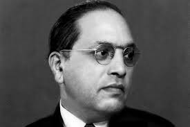

"I like the religion that teaches liberty, equality and fraternity." - Dr. B. R. Ambedkar
Introduction
Bhimrao Ramji Ambedkar (14 April 1891 – 6 December 1956), popularly known as Babasaheb Ambedkar, was an Indian jurist, economist, politician and social reformer who inspired the Dalit Buddhist movement and campaigned against social discrimination towards the untouchables (Dalits), while also supporting the rights of women and labour.He was independent India's first law minister, the principal architect of the Constitution of India, and a founding father of the Republic of India.
His Life :
- Place of Birth:
Mhow in Central Provinces (currently Madhya Pradesh) - Parents:
Ramji Maloji Sakpal (father) and Bhimabai Murbadkar Sakpal (mother) - Spouse:
Ramabai Ambedkar (1906-1935); Dr. Sharada Kabir rechristened Savita Ambedkar (1948-1956) - Education:
Elphinstone High School, University of Bombay, Columbia University, London School of Economics - Associations:
Samata Sainik Dal, Independent Labour Party, Scheduled Castes Federation - Political Ideology:
Right winged; Equalism - Religious Beliefs:
Hinduism by birth; Buddhism 1956 onwards - Publications:
Essays on Untouchables and Untouchability, The Annihilation of Caste, Waiting for a Visa - Date of Demise:
6, December, 1956
For more info Click Here.